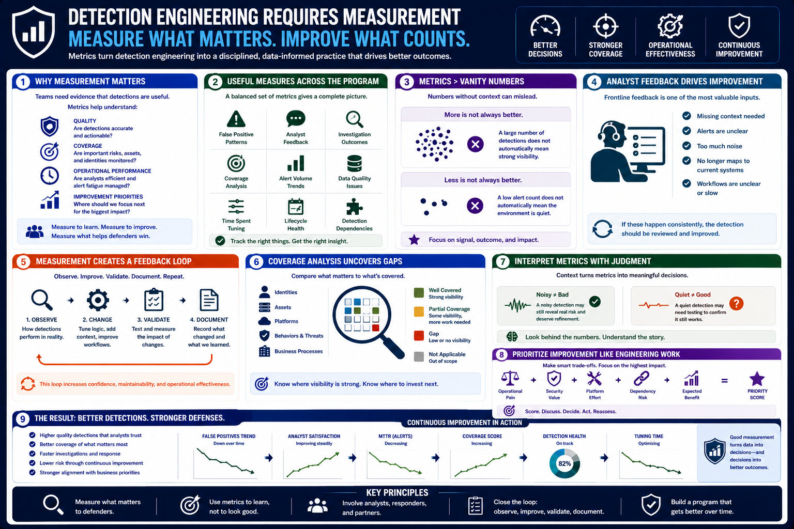

What Is Detection Engineering?
Measuring and Improving Detections
Connecting to LMS... Progress: in progress
Version 1.0 | Date: 2026-06-16 | Educational overview of defensive detection engineering concepts.

Narration
Detection engineering requires measurement because teams need evidence that their detections are useful. Metrics help teams understand quality, coverage, operational performance, and where improvement work should be prioritized.
Useful measures may include false positive patterns, analyst feedback, investigation outcomes, coverage analysis, alert volume trends, data quality issues, time spent tuning, and lifecycle health.
Metrics should support better decisions, not create vanity dashboards. A large number of detections does not automatically mean strong visibility. A low alert count does not automatically mean the environment is quiet.
Analyst feedback is one of the most valuable sources of improvement. If responders consistently need missing context, if alerts are unclear, or if a detection no longer maps to current systems, the detection should be reviewed.
Measurement creates a feedback loop. Teams observe how detections perform, make changes, validate those changes, and document what they learned. Over time, that loop improves confidence, maintainability, and operational effectiveness.
Coverage analysis is another important measurement area. Teams compare important behaviors, assets, identities, and platforms against current detections to understand where visibility is strong and where additional work may be needed.
Metrics should be interpreted with judgment. A noisy detection may still be valuable if it reveals real risk, while a quiet detection may need testing to confirm that the underlying telemetry and logic still function.
Improvement work should be prioritized like engineering work. Teams can weigh operational pain, security value, platform effort, dependency risk, and expected benefit before deciding what to tune or build next.